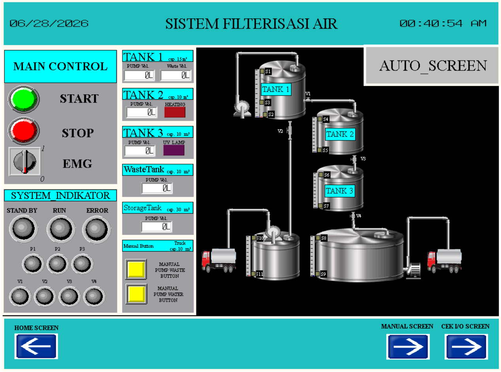
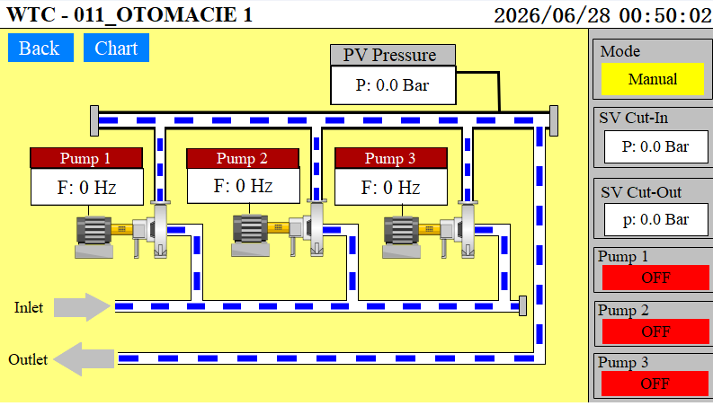
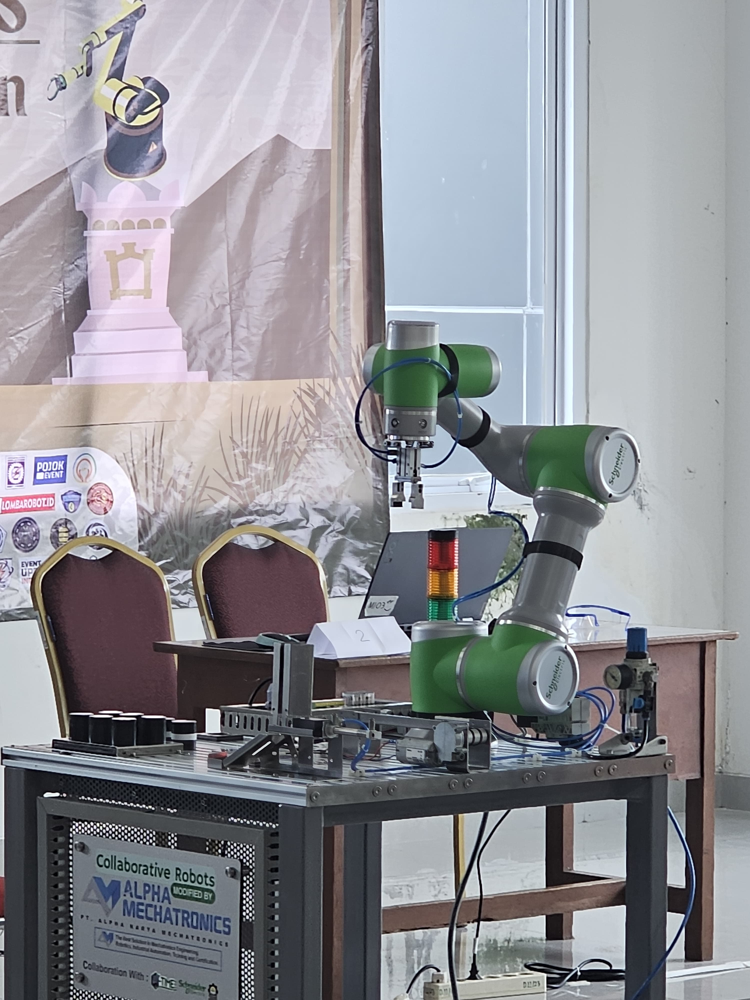
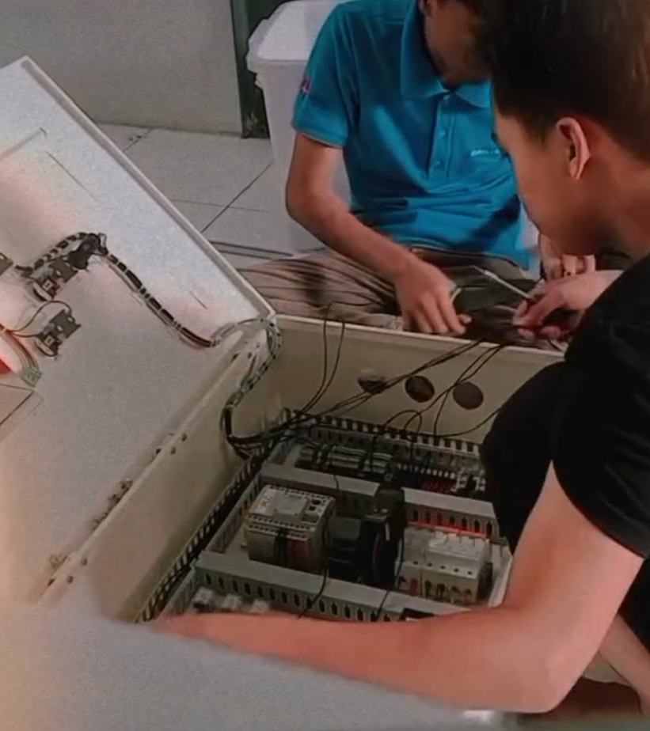
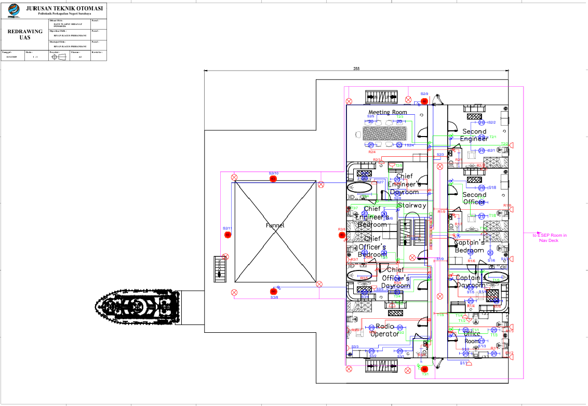

Portofolio & Proyek Teknis
Dokumentasi sistem kontrol, pemrograman otomasi, dan bukti rekayasa mandiri maupun tim.

Sistem Filterisasi Air Bersih Otomatis
Merancang program sistem kontrol berbasis PLC Omron dan desain HMI Omron untuk aplikasi monitoring dan kontroling sistem filterisasi dengan di lengkapi berbagai mode sesuai dengan standar industri dan safety K3.

Sistem Otomasi Booster Pump 3-axis Berbasis PLC & HMI Terintegrasi VFD
Sistem kontrol multi-pompa otomatis (Booster Pump) yang dirancang untuk menjaga kestabilan tekanan air (Pressure) pada pipa distribusi industri secara real-time. Menggunakan integrasi PLC dan HMI Wecon untuk memantau nilai frekuensi VFD (Hz), status operasional pompa (ON/OFF), serta pengaturan batas tekanan Cut-In dan Cut-Out. Dilengkapi dengan mode operasi Manual/Auto untuk efisiensi energi dan kemudahan maintenance sistem fluida.

Cobot Schneider Integration
Implementasi dan pemrograman Collaborative Robot (COBOT) Schneider untuk optimasi rute perakitan manufaktur otomatis.

Perakitan & Pengawatan Panel Otomatisasi
Instalasi komponen panel kontrol berbasis PLC Panasonic FP-X dan HMI WEINTEK dengan komunikasi RS-232 dan intergrasikan dengan Collaborative Robot (COBOT) dengan komunikasi secara real-time serta dilengkapi sistem IOT untuk monitoring jarak jauh yang sesuai dengan standar industri dan safety K3.

Monitoring Energi Terdistribusi ESP32
Sistem pembacaan data sensor arus dan tegangan listrik berbasis ESP32 yang dikirim ke dashboard IoT secara real-time.

Perancangan Diagram Kelistrikan kapal AutoCAD
Pembuatan blueprint gambar teknik skema kelistrikan daya dan kontrol untuk standardisasi perakit kelistrikan kapal home base.

Desain Interface Monitoring Pabrik Kelapa Sawit
Menggunakan EasyBuilder Pro untuk mendesain tata letak grafis HMI interaktif demi mempermudah operator memantau interlock system.

Sistem Kontrol Penggerak Conveyor Pertambangan
Penyusunan logis program ladder diagram counter, timer, dan interlocking keselamatan untuk operasional conveyor kecepatan tinggi.